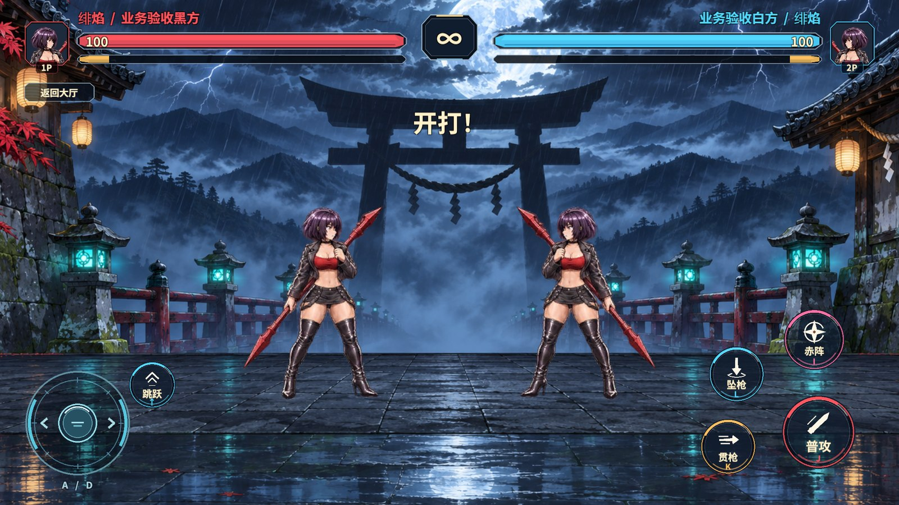
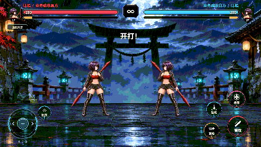

决斗 HUD 重制
雨夜擂台上方用红蓝区分双方头像、昵称和血条，居中显示时钟，金色能量条按五格分段。底部留出两手的操控空间，圆键使用同一套深底描边和招式图标。

触控设计
左下的固定摇杆只采样横向，向左右推即走位，松手归中。中心死区和较小的回中阈值让轻微抖动时的方向更稳定。跳跃放在摇杆上方。右手拇指以最大号普攻为中心，贯枪在左下、坠枪在左上、赤阵在上方。现有键盘 A/D、方向键、J、K、L、I 和跳跃均可用。
参考王者 v122 的 NormalJoystickStrategy 和 CUICircleArea，摇杆由单个触点持有，每个圆键使用真实圆形射线区域。方向码进入原有 PvpService.SetDuelInput，服务按决斗帧收集输入。GameMobileLayout 将 HUD 等比映射到安全区，并将宽屏额外安全空间分给左右手。
顶部信息分层参考《街头霸王 6》的生命、资源和计时显示，《铁拳 8》的 HUD 前置可读性，以及用户视频的红蓝对照。街头霸王 6 官方 HUD 手册 · 铁拳 8 官方 HUD 说明 · 用户参考视频
验收结果
| 检查 | 结果 |
|---|---|
| RevCLI 场景和图集 | game.pvp.duel-build 生成正式决斗场景，game.pvp.duel-atlas 在 StandaloneWindows64 实际打包 57 张 Sprite，共两页，含 17 张 HUD 切片。 |
| Unity 同机 UTP · 1920×1080 | 两席昵称可见，六个圆形触控区都在安全区内，彼此不重叠。普攻是右侧最大的圆键，六个触控区使用已打包图集。 |
| 触点和权威输入 | 中心死区归中，第二触点无法抢占移动，摇杆拖出圆外可以反向。按住摇杆的同时，独立触点触发了跳跃与贯枪，松手后角色停止横移。 |
| 实战回归 | 真实 HUD 完成六连击，坠枪在判伤帧落地，对手剩 3 点血。原生连招与预测回滚回归通过。 |
同一 RevMCP 会话中用 rev_discover 发现 Editor 与游戏动作，以 rev_call 调用 editor.play。rev_run 在正式场景执行 pvp.duel-hud-layout、pvp.duel-hud-input-check、pvp.duel-arcade-combo，最后清理房间、回到大厅并停止 Play。
有一轮密集连拍时第三段连招等待超时。最终复核先完成触点连拍，随后六段连招全部通过。

框架与交付范围
Revolution 的场景流程、服务入口和自动化支持这次 HUD 改造，帧同步继续由既有决斗输入缓冲和 GameCore 驱动。圆形射线和触点持有逻辑归决斗视图。此次使用 Windows Unity Editor 同机触点模拟，实体手机的握持与刘海适配尚未实测。独立 Player 需随新版内置决斗场景构建。